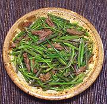

|
Minari & Beef - BanchanKorea - Minari Changatchi | ||||
| Serves: Effort: Sched: DoAhead: |
4 ban ** 45 min Yes |
This is a nice banchan (small side dish) with a very interesting herbal flavor from the Minari. The only problem is getting Minari. This recipe makes 5-3/4 ounces. Served traditionally with other banchans, rice and main dish, this recipe will serve 4. | |||
|
6 2-1/2 ------ 1/4 1/2 1/2 1 1/2 1/4 ------ |
oz oz --- in t t T t t --- |
Minari (1) Beef, lean (2) -- Dressing Ginger Sesame Oil, dark Sesame Salt (3) Soy Sauce Sugar Pepper, black ------------ |
Prep - (25 min)
|